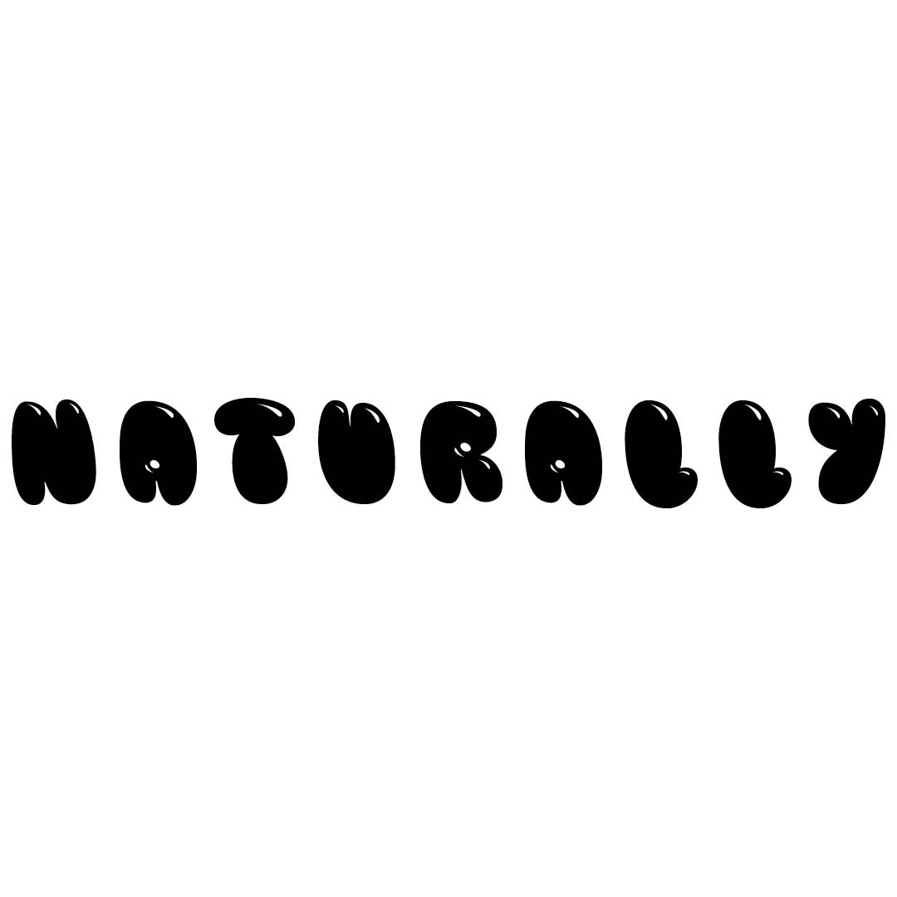
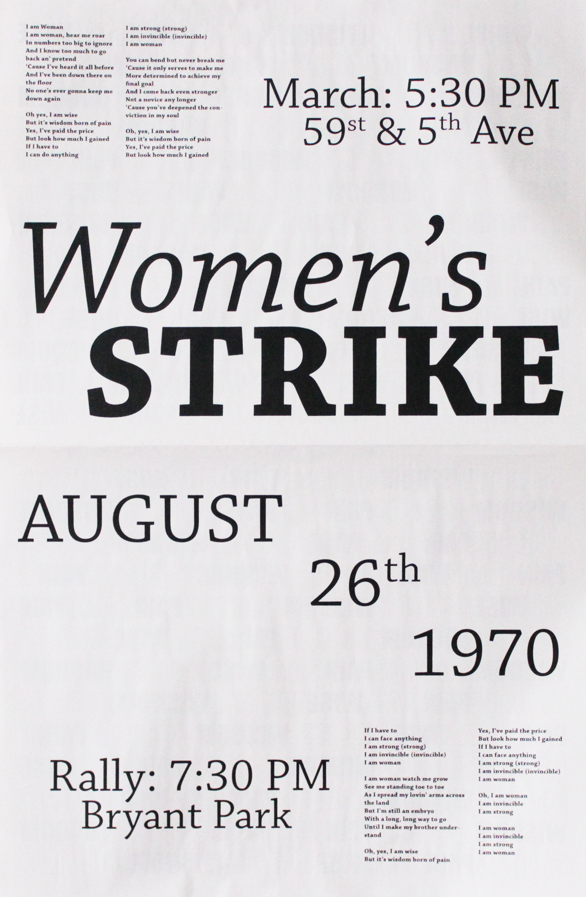

The nametag, a project that refelects how you idenitify yourself. this project not only did I idenitify myself but my personality as well. Link!
Have you every experinced a toy that was so frustrating to understand and finish? That was me with the Etch-A-Sketch toy I had back when I was probably 5 years old. I always wanted to know how to draw on it but I deemed it too diffucult. Why don't you try my Etch-A-Sketch I made. Link!
Music, it is the universal language. Music is my whole world. I make sure I always have my ears glogged with my favorite song. One of my favorites is One Way St by Jhené Aiko. All her songs take me to a whole other planet so in this project I transport you the what I see/feel when I listen to her song. Link!
Dealing with naturally frizzy hair is something that is annoying but so powerful for people like me. To showcase that I made a gif of a mantra I always say while doing my hair in frustration.
Women are powerful and Helen reddy let all women around the world witness that with her song ‘I Am Women’. When this song came out there was going to be a women’s strike in New York and other states to protest inequality between men and women.
